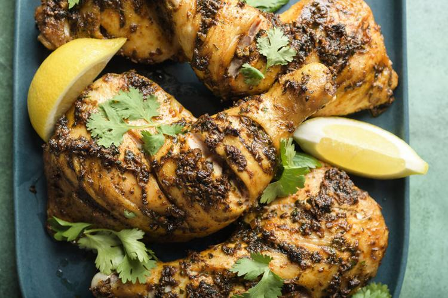

Home
Recipes
Measurements Conversion
Common Ingredients
Djedj Mechoui (Algerian Poulet Roti/Roast Chicken)
Ingredients
1 whole chicken (around 1.2 kg)
1 tablespoon of salt
1 teaspoon of black pepper
1 teaspoon of paprika
1 teaspoon of cumin
1 tablespoon of dried rosemary
1 tablespoon of vegetable oil
1 lemon, cut into wedges
Instructions
Preheat the oven to 200°C (390°F).
Clean the chicken inside and out, and pat it dry with kitchen paper.
Mix the salt, black pepper, paprika, cumin, and dried rosemary in a bowl.
Rub the chicken with the vegetable oil, and then with the spice mix, making sure that it is well coated.
Place the chicken in a baking dish and roast in the oven for about 50 minutes, or until it is cooked through and golden brown on the outside.
Remove the chicken from the oven and let it rest for 10 minutes before carving.
Serve with lemon wedges on the side.
